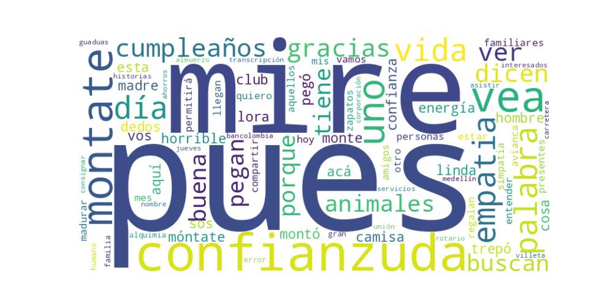

Seguidores: 987
1. Perfil de Comunicación: El candidato emplea un estilo de comunicación marcadamente informal, cercano y coloquial, que se asemeja más a una interacción personal en redes sociales que a un discurso político estructurado. Utiliza un lenguaje popular, espontáneo y lleno de modismos regionales (ej. "vea", "pues", "hombre"), buscando generar una sensación de autenticidad y conexión directa con el individuo. La comunicación se presenta como desestructurada, fluyendo entre reflexiones personales, anécdotas cotidianas y anuncios prácticos, lo que proyecta una imagen accesible y desprovista de la formalidad típica de un cargo presidencial.
2. Temas Principales: El corpus proporcionado es limitado y no desarrolla una agenda política explícita. En su lugar, los temas recurrentes son personales y de carácter general: * Crecimiento Personal y Valores Humanos: Aborda la "empatía" como palabra clave para su desarrollo, hablando de "madurar más" y "entender la Alquimia de la Vida". Ejemplo: "La Palabra del 2026... que me permitirá madurar más, estar en los zapatos del otro... y ser un gran ser Humano!" * Conexión con la Naturaleza y lo Espiritual: Relata una anécdota con un animal (una lora) para transmitir un mensaje sobre energía positiva y conexión simple. Ejemplo: "Dicen que cuando los animales lo buscan o se le pegan, es porque uno tiene una muy buena energía." * Agenda Social/Eventos (Implícito): Incluye un llamado práctico a un almuerzo, indicando una actividad de networking o recaudación. Ejemplo: "Interesados en Asistir al Almuerzo en el Club Unión... Consignar $50.000..."
3. Tono y Sentimiento Dominante: El tono general es positivo, cálido y despreocupado. Predomina un sentimiento de optimismo personal y cercanía, sin rastro de confrontación, crítica política o propuestas programáticas. Es un tono narrativo y anecdótico que busca ser amigable y generar simpatía a través de la simpleza y la emoción positiva ("una cosa muy linda, hombre").
4. Palabras Clave de Poder: * Empatía: La presenta como la "Palabra del 2026" y la asocia con madurez y crecimiento humano. * Energía (buena energía): La repite como un atributo personal positivo, validado por la interacción con la naturaleza. * Confianzuda: Uso coloquial y repetitivo para describir al animal, reflejando informalidad y creando una imagen de alguien con quien se puede tener confianza. * Familia/Amigos: Dirige su mensaje inicial a "amigos, familiares y personas... en mi Vida", enmarcando su comunicación en un círculo de confianza personal.
5. Conclusión Estratégica: La estrategia de comunicación evidente en este corpus se centra en la construcción de una marca personal carismática y accesible, priorizando la conexión emocional sobre el debate programático. Parece hablarle a una audiencia que valora la autenticidad, la calidez humana y un liderazgo percibido como "de la gente". El discurso busca evocar simpatía, identificación y confianza a través de la vulnerabilidad (compartir un propósito personal de crecimiento) y la narrativa de experiencias cotidianas positivas. Esta aproximación sugiere una estrategia inicial de "soft power" o de ganar terreno afectivo, posponiendo o complementando en otros espacios la presentación de una plataforma política concreta. La inclusión de un evento social apunta a una táctica de movilización de base y construcción de redes de apoyo cercanas.
1. Resumen del Patrón de Éxito: El patrón de éxito dominante se basa en una comunicación emocional y de cercanía auténtica. El candidato abandona por completo el registro discursivo político tradicional para adoptar un tono espontáneo, personal y cotidiano. La fórmula no reside en promesas programáticas o ataques frontales, sino en generar empatía, simpatía y una conexión humana genuina a través de momentos íntimos, compartidos en tiempo real. El éxito se mide en la capacidad de ser percibido como una persona "real" y accesible, no como una figura de poder distante.
2. Tácticas de Comunicación Clave: * Humanización Radical y Espontaneidad Escenificada: Los videos más exitosos son vlogs que capturan momentos imprevistos y "auténticos" (como el encuentro con un animal o el día de cumpleaños). El candidato se presenta en un entorno no controlado, hablando de manera coloquial y reaccionando como cualquier persona. La "puesta en escena" busca borrar la frontera entre la vida pública y la privada. * Narrativa de Conexión Emocional y Positivismo: Se evita el conflicto y se apela a emociones universales y positivas: la ternura (interacción con el animal), la alegría (cumpleaños), la buena energía y la empatía. Se construye una narrativa donde el candidato es un canal de emociones cálidas y un imán de "buena vibra". * Lenguaje Coloquial y Cercanía Lingüística: Uso constante de modismos colombianos ("mire pues", "vea", "hombre"), diminutivos y un tono conversacional. Esto crea una ilusión de diálogo directo y sin filtros con el espectador, rompiendo con la formalidad del discurso político. * Contenido "Apolítico" como Estrategia Política: Los temas no son políticos en el sentido estricto. El éxito no viene de explicar un plan de gobierno, sino de demostrar un carácter y unos valores (empatía, sencillez, conexión con la naturaleza y la gente común) a través de anécdotas. La política se hace implícita a través de la personalidad.
3. Temas de Mayor Resonancia: Los temas que generan mayor engagement son notablemente no programáticos: * La Autenticidad y la Vida Cotidiana: Mostrarse en carretera, en un avión, en interacción con el entorno. * La Conexión con la Naturaleza y los Animales: El video con la lora es un arquetipo: simboliza pureza, instinto y una conexión que trasciende lo humano. * Celebraciones y Momentos Personales Positivos: El cumpleaños como un evento compartido con la audiencia, invitándola a ser parte de su círculo de celebración. * La "Buena Energía" y la Empatía: Estos conceptos abstractos pero emocionalmente poderosos se convierten en los pilares de su marca personal.
4. Perfil de la Audiencia Implícita: El contenido apela a una audiencia emotiva y desencantada con la política formal. No está dirigido principalmente a militantes que buscan arengas o detalles de políticas públicas. Su público implícito es: * Votantes que valoran la autenticidad por encima de la experiencia técnica. * Personas jóvenes o de mentalidad digital, acostumbradas al contenido orgánico de redes sociales y sensibles a la construcción de una personalidad "relatable". * Indecisos o desinteresados en política, que pueden conectar con un mensaje humano y sencillo antes que con un discurso ideológico. * La base leal, a la que este contenido la reconforta y humaniza a su líder, reforzando el vínculo emocional.
5. Conclusión Estratégica: La clave fundamental del poder de su discurso es la despolitización performativa. Su fuerza no radica en lo que dice sobre políticas, sino en quién parece ser en cada momento. Ha comprendido que en el ecosistema de redes sociales, el capital emocional y de autenticidad es más valioso que el capital político tradicional. Lo que lo hace diferente y potente es su capacidad para no parecer un político mientras hace campaña, construyendo lealtad a través de la identificación personal y no necesariamente a través de la adhesión programática. Su estrategia no es debatir en el campo de las ideas rivales, sino operar en un campo diferente: el de la conexión emocional pura. El riesgo es la percepción de frivolidad; la oportunidad es la construcción de un vínculo casi parasocial con el electorado.

Caption: HISTORIAS DE CARRETERA. Guaduas - Villeta.
Likes: 69 | Comentarios: 0 | Reproducciones: 3,342
Ver en InstagramCaption: #Matamoros #Giraldo
Likes: 24 | Comentarios: 7 | Reproducciones: 1,324
Ver en Instagram